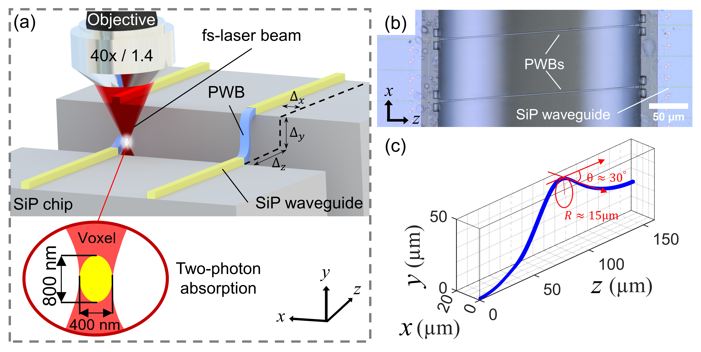
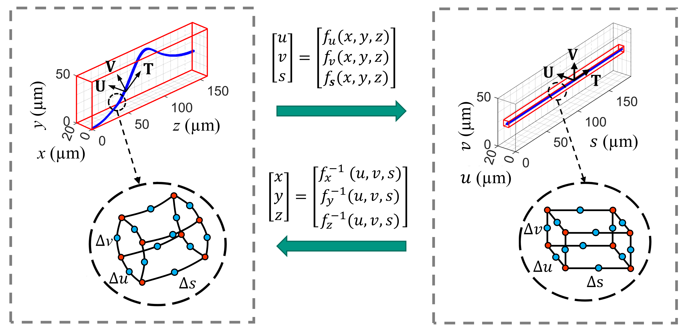
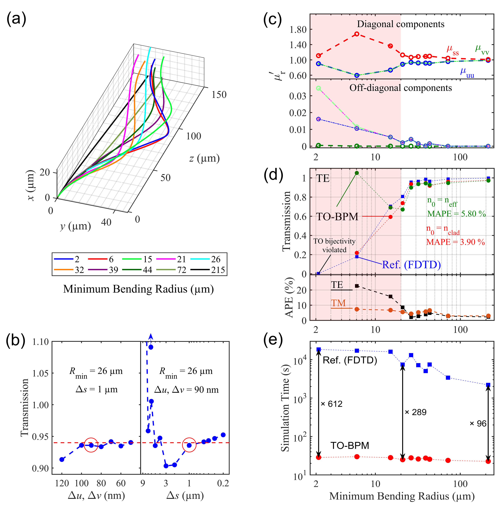
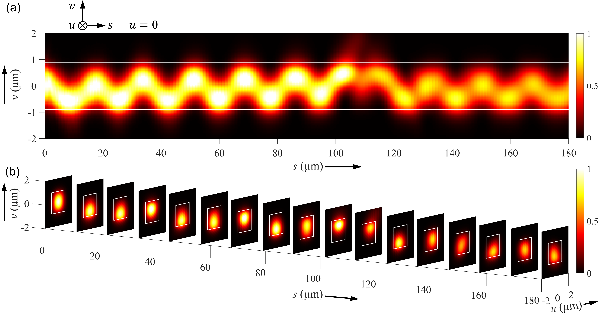
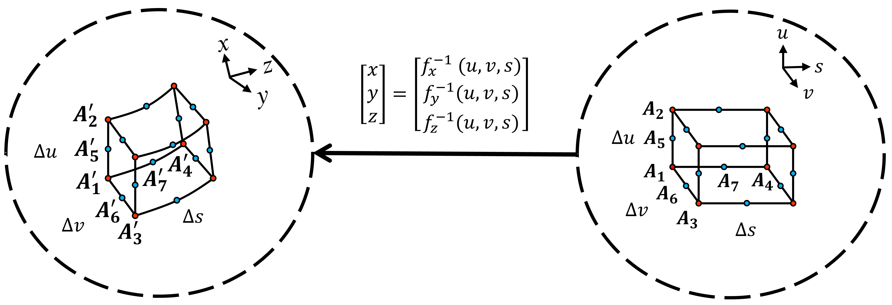

基于变换光学的光束传播法对3D打印自由曲面波导的高效建模
本文提出一种用于模拟3D打印自由曲面波导（称为光子引线键合（PWB））中波传播的高效数值方法。该方法将变换光学（TO）与曲线网格划分相结合，把原始的3D自由曲面PWB结构映射为一条直波导，该直波导具有各向异性材料特性。随后采用各向异性全矢量光束传播法（BPM）对该波导进行分析。为验证所提TO-BPM算法的性能与有效性，将其与时域有限差分（FDTD）技术进行了对比。我们的方法 与a结合 在功率传输仿真方面相对于FDTD的。
1 引言
光子集成回路（PIC）已成为众多应用的重要基础构件，推动了多个技术领域的进步。其中包括高速通信系统[4]、前沿人工智能框架[17]、超快信号处理技术[5]、精密光学计量[20]，以及生命科学和生物光子学领域的创新解决方案[10]。在单个芯片上集成多种光子功能的能力，使这些领域发生了革命性变化，带来了无与伦比的性能、微型化和能效优势。从技术角度看，光子集成回路（PIC）主要采用平面设计，通过成熟的微纳加工技术制备，包括薄膜沉积以及利用高分辨率电子束或深紫外光刻进行二维图形化[8]。近年来，这些传统加工方法又得到双光子光刻技术的补充，该技术可在原位生成三维自由曲面结构，从而显著提升平面 PIC 的能力[25, 15, 26]。一种尤为引人注目的方法是使用三维打印的自由曲面波导，称为光子引线键合（PWB）[11]。这类波导便于光子芯片之间的互连，例如用于高性能光子多芯片模块中[25, 15]。PWB 概念的一个关键特性，是它能够应对光子芯片固有的对准误差。其实现方式是调整 PWB 的轨迹与几何形状，以匹配耦合端面的精确位置。这些位置仅在加工过程中确定，且必须在打印前数秒内转换为低损耗的 PWB 设计。目前，这一过程依靠计算效率高的 PWB 设计启发式算法完成，这些算法选择一条平滑路径来连接相关光学接口[11, 14, 16]。该方法虽然快速且结果令人满意，但无法预测 PWB 的损耗。相比之下，基于第一性原理麦克斯韦方程的求解器，例如采用时域有限差分（FDTD）方法的求解器，已被用于 PWB 建模[16]。然而，即便借助变换光学（TO）将其适配到中等弯曲平面波导这一特定情形，这些求解器仍然太慢[16]。光束传播法（BPM）已被用于高效仿真各向同性和各向异性介质中的波传播。但由于其基于近轴传播的假设，该方法在处理自由曲面弯曲结构时面临挑战[6]。已有多种 BPM 算法被研究用于加快集成光波导的电磁仿真速度。Xu 等人[24]提出了适用于含各向异性材料平面波导的方法。Lu 等人[13]提出了一种将标量 BPM 与曲线坐标系相结合的方法，用于对弯曲平板波导建模。Kawamura 等人[9]将全矢量 BPM 与坐标变换相结合，用于对锥形平面波导建模。因此，目前仍然缺少一种基于麦克斯韦方程、可高效对三维自由曲面波导进行建模与设计的工具。

在我们之前的会议论文[7]中，我们给出了TO-BPM算法的初步结果。TO-BPM是一种高效算法，专为仿真3D打印自由曲面PWB中的波传播而设计。该方法基于全矢量BPM，并将其与TO相结合。具体而言，TO与曲线网格划分配合使用，将初始3D自由曲面PWB转换为具有各向异性材料特性的直波导，随后再用BPM进行分析。我们通过与FDTD方法的性能对比，验证了所提TO-BPM算法的有效性。对于实际相关、具有中等弯曲的PWB设计，我们的方法在计算时间上最多可降低 -倍，同时在功率透射仿真中相较于FDTD基准值达到 。据我们所知，我们的工作首次实现了能够处理具有非平面轨迹的3D自由曲面波导的全矢量BPM。我们预计，该方法可在高吞吐量光学装配过程中，为PWB结构的高效实时光路由与设计发挥关键作用。
2 方法
如图 1(a)所示，光子引线键合（PWB）在不同的光子集成电路（PIC）芯片之间建立光互连[11]。PWB放宽了光子芯片（图 1(b)）和光纤的对准公差，使它们无需昂贵的主动对准即可完成放置。PWB的制造方法是：利用高数值孔径（NA）浸没物镜将飞秒光束聚焦到液体中，通过双光子吸收引发局部聚合（即固化）。通过横向和轴向移动焦点来定义PWB的形状。最后，在显影过程中去除残余液态墨水，得到打印出的PWB（图 1(c)）。PWB的轨迹基于样条曲线设计，以实现平滑过渡，但未根据麦克斯韦方程组考虑光损耗。不同芯片的发射方向可能截然不同，因此用于优化PWB轨迹的仿真域可能很大。主要挑战在于，在原位自动化打印过程中于数秒内设计出该轨迹，因为大规模PWB设计所需的复杂建模既耗费计算资源又耗时。光束传播法（BPM）被用于对弯曲平面波导建模[13]。然而，由于它依赖傍轴近似且无法计入后向反射波，因此不适合对三维任意弯曲波导建模。该方法通过沿纵轴逐步推进场来求解波导中的光束传播，其前提是传播主要沿该轴方向进行，横向变化很小。这种方法对简单的直波导效果良好，但在复杂的弯曲波导中失效，因为波动行为已偏离简单的光束演化。
我们采用以下记号：矩阵和张量用粗正体字符表示。逆矩阵记为。对角矩阵是单位矩阵。在上下文明确的情况下，向量也用粗正体字符表示。在分量形式中，矩阵和行向量用括号表示，而列向量用转置符号表示。向量映射函数和反向向量映射函数具有特殊含义，其中是的逆函数。
2.1 自由曲面波导建模的拓扑优化（TO）方法

变换光学（TO）方法[16]通过将（x, y, z）空间中的弯曲波导变换为虚拟空间中的拉直波导，大幅减小了三维自由曲面波导的仿真区域，如图2中的红框所示。具体而言，当把一个域从（x, y, z）坐标映射到虚拟坐标时，只需调整虚拟域中的材料属性，而麦克斯韦方程组仍保持其原有形式[16]。真实（x, y, z）空间与虚拟空间中材料属性之间的关系由[16, 19]给出：
| (1) | |||
在这些关系式中，量表示真实空间中的介电张量，表示虚拟空间中的该张量。对于真实空间中的磁导率张量和虚拟空间中的张量，也成立等价的关系式。量J是坐标变换函数的雅可比矩阵，是其转置，
| (2) |
行列式绝对值衡量了变换后体单元的尺度，其尺寸不应偏离真实体单元过多。否则，虚拟空间中的张量元素可能变得过大或取到非物理的小值，从而使所采用的算法变得不准确。
2.2 曲线映射
为了将数值运算集中到物理上感兴趣的空间，我们将具有笛卡尔坐标 的实空间映射到具有笛卡尔坐标 的虚拟空间，见图 2。在实空间中，我们在轨迹上的点 处采用一个局部右手三面体，其单位向量为 。我们不再采用通常的直角体积元，而是采用一个曲线体积元，它能更贴近地近似波导的几何形状 [13, 21]。局部坐标 取决于该三面体的原点 。为了在数值上实现这一映射技术，我们需要在实空间中定义一个六面体曲线网格体积元 （图 2 左插图），并将其变换为六面体直角网格体积元。这意味着需要根据式 (1) 改变 和 张量。为避免变换后的张量与实空间中的张量产生过大的偏差，雅可比矩阵行列式不应偏离 1 过大，因此虚拟空间中各边的长度取得与实空间中的长度相同（图 2 右插图）。
垂直于（切向）轨迹方向 的平面是离散轨迹点 的函数 [16]，
| (3) |
坐标沿单位切向量的方向测量，表示沿波导轨迹的弧长。其起点定义为。式(3)可用于在真实空间中沿轨迹的平面上生成网格。该过程如图2所示。式(3)允许自由选择轨迹上各点处横向坐标平面内单位向量和的取向。为此，我们采用旋转最小化标架（RMF）[16, 3]，它使标架沿轨迹的旋转运动最小。RMF在计算机图形学和三维建模中应用广泛[2]。为计算RMF，我们采用一种称为双反射法的快速简便近似方法[22]。该方法需要已知轨迹的采样点、各采样点处的切向量，以及第一个采样点处的初始坐标标架。轨迹上后续采样点的坐标标架通过递推方式计算[16, 2]。第一个采样点处的坐标标架的选取应使表示切向量，且与在垂直于的平面内相互正交。平面上的离散点的选取应能准确表示波导的横截面形状。
沿轨迹对整个波导完成网格划分后，利用对每个体单元唯一确定的特定二阶函数，将轨迹上各点处得到的曲线六面体单元映射为变换后的空间中对应的直角六面体。用解析方式表示把单元从变换空间映射回真实空间的逆函数，通常更为直接、更易理解。定义更高阶的映射需要额外的网格点，即图2中的蓝点。对于从虚拟空间到真实(x, y, z)空间的二阶映射，可写为
| (4) |
2.3 TO-BPM算法
将波导变换为直波导构型并在各网格点处计算出材料属性后，我们采用全矢量有限差分光束传播法（BPM）计算电磁场。由于变换后的波导是直的，我们采用近轴BPM，其计算效率高于大角度版本。BPM是一种前向传播技术，忽略反射。在以透射率计算为重点的波导仿真中，这一局限是可以接受的。该方法的详细描述见[24]。
BPM算法对一个初始电场矢量在体积内进行逐步传播，该体积由边长为、与网格点关联的张量、各不相同的个网格单元组成。轴是虚拟空间中的传播方向。 我们将在第3节中证明：在所有实际情况下，主对角线上的相对磁导率张量元与的偏差小于，而非对角元小于。因此可将该材料视为非磁性材料，其磁导率张量为，麦克斯韦的两个一阶耦合微分方程便化简为关于（以及, 的两个互不耦合的二阶微分方程。
| (5) | |||
| (6) |
为真空中的光速。对于-平面内的横向场矢量，我们将快速变化的空间依赖关系与仅沿方向缓慢变化的振幅矢量分离开来。
| (7) |
式中为参考折射率。可取两种情况：，以及，其中表示按加权平均值[12]计算得到有效折射率，
| (8) |
式(7)中快速变化部分的分离使得慢变包络近似（SVEA）成立，这对于光束传播法（BPM）的近轴表述至关重要，
| (9) |
元素描述微分矩阵算符的各分量，更多细节参见附录B。有限差分法可用于求解式(9)。加权因子决定了切片和对式(9)中微分项的贡献程度，
| (10) | ||||
| (11) | ||||
| (12) |
切片索引标记一个垂直于沿轴传播方向的平面。当时该格式无条件稳定，而当时功率守恒，如式(11)[22]所示。该方法导出一个线性方程组：
| (13) |
式中为稀疏矩阵，而未知量和已知量为向量。采用MATLAB高效求解该线性方程组。此外，在计算域的边界处施加完美匹配层（PML）[18]。
3 结果与讨论

为检验我们的TO-BPM算法，我们将其应用于分析弯曲PWB，其轨迹的最小曲率半径范围从到，如图3(a)所示。这些PWB选自一组曲率平滑变化的三维随机弯曲非平面轨迹。我们已按其最小曲率半径对其进行了标注。所有PWB的矩形横截面在和方向上分别为。芯层和包层的折射率分别为和。为确定我们TO-BPM算法中合适的网格单元尺寸，我们进行了收敛性测试。如图3(b)左图所示，在固定网格分辨率为的条件下，我们改变和，并评估了PWB的透射率。结果发现，当时方法收敛，振荡极小，小于。随后我们固定并改变，如图3(b)右图所示。仿真结果在处收敛。对于最小弯曲半径更大的轨迹，也观察到了相同的行为。因此，我们选取垂直于轨迹方向上的网格尺寸为，沿轨迹方向上的步长为。
在光子集成中，通常需要偏移量为数微米量级的互连。对于这类情形，的PWB足以确保平滑过渡和最小的光损耗。如图3(c)所示，我们检查了拓扑优化（TO）方法所得的磁导率张量，并观察到对于，非对角元收敛于零，而对角元收敛于一，从而得到单位矩阵。这一观察表明，在该范围内，我们假设材料为非磁性的公式(5)、(6)是可靠的。
在图3(d)中，我们绘制了TO-BPM针对每条以表征的PWB轨迹在处得到的仿真功率透射率，并将结果与商用FDTD求解器（Lumerical FDTD, Ansys Inc., Canonsburg, PA, USA）[1]所得结果进行了比较。
在处，即对应于Crank-Nicolson格式[23]时，该方法保持稳定，确保功率守恒。这里我们研究了在相关（白色）区域（）内选取不同参考折射率的影响，考虑两种情形：，以及，其中表示用式(8)计算的有效折射率。取时，所得MAPE为 。另一方面，将设为仿真区域内的最小折射率，可将MAPE降至 。该误差表示TO-BPM计算的功率透射率相对于FDTD参考值的绝对偏差，并对所有满足的数据点取平均。
为便于比较，TO-BPM 与 FDTD 仿真均在同一系统（AMD EPYC 7713P 64-Core 2 GHz Processor，512 GB DDR4-3200 Memory）上运行。如图 3(e) 所示，对于光子引线键合（PWB）弯曲半径小于 的情况，我们的实现比常规时域有限差分（FDTD）仿真快至 600 倍；对于弯曲半径不超过 的情况，则快 100 倍。随着弯曲半径的增大，FDTD 计算中仿真体积的减小变得不那么显著，两种方法之间的性能差距也随之缩小。计算时间始终低于 30 秒。TO-BPM 的内存需求（通常小于 2 GB）远低于 FDTD 求解器（通常大于 100 GB）。
图 4 给出了最小弯曲半径为 （图 3(a) 中的绿色曲线）的 PWB 的仿真电场光强 。我们在变换后的 空间中给出 TE 偏振光的结果，其主电场沿 （ 空间）取向，并沿 （ 空间）取向。图 4(a) 示出 空间中平面 上的场分布。图 4(b) 以三维视图给出同一场分布，其中沿波导轨迹依次示出垂直于传播方向 的各个 平面。 方向的弯曲十分剧烈，在 处弯曲半径最小，仅为 ，这使模式在 方向上摆动。该弯曲导致光从纤芯明显泄漏到包层，随后进入包围仿真区域的完全匹配层（PML）。

4 结论
我们提出了一种计算高效的 TO-BPM 算法，该算法将变换光学（TO）与全矢量光束传播法（BPM）相结合，用于对三维（3D）打印的自由曲面光子引线键合（PWB）进行建模。为验证本方法的有效性，我们对具有非平面轨迹、弯曲半径范围广泛的自由曲面 PWB 进行了仿真。本方法在计算效率上实现了显著提升，与真实三维空间中的参考 FDTD 仿真相比，计算时间最多可降低 600 倍。与 FDTD 方法相比，TO-BPM 方法的平均绝对百分比误差为 。值得注意的是，据我们所知，本工作首次成功地将变换光学与全矢量 BPM 相结合，能够处理具有非平面轨迹的三维自由曲面波导。我们相信，TO-BPM 技术有望推动三维自由曲面光子引线键合的设计与优化。
附录 附录 A 曲线网格单元的二阶映射

本节描述计算式（4）中二阶映射 的系数的步骤。本文假设 PWB 的截面为矩形，因此网格单元沿 与 方向的边为直线，如图 5 和图 2 所示。此后，如图 5 所示，经由 连接顶点 与 的边将表示为 。为根据顶点坐标计算系数 ，我们在二阶映射表达式中选取合适的坐标系 对每条边进行参数化。例如，对边 ，合适的参数化表示为
| (14) |
接着，在 、 与 处对该参数化求值，分别对应于 、 与 。由此得到
| (15) | ||||
对其他边 与 采用经修改的参数化重复上述步骤，所得二阶映射系数如下
| (16) | ||||
在每个网格点（图 5 中的红点）处应用该步骤，即可得到 矩阵的各个分量，以及变换后的介电常数（）张量与磁导率（）张量。
附录 附录 B 各向异性全矢量光束传播法（BPM）
基金资助
Deutsche Forschungsgemeinschaft (EXC-2082/1 - 390761711, SFB 1173); European Research Council (773248); GOSPEL (403187440); ATHENS (101167540); Karlsruhe School of Optics & Photonics (KSOP).
致谢
本研究由 Deutsche Forschungsgemeinschaft（DFG，German Research Foundation）依据德国卓越战略资助，具体通过卓越集群 3D Matter Made to Order（EXC-2082/1 - 390761711）以及 DFG Collaborative Research Center（CRC）WavePhenomena（SFB 1173）实施；部分由 European Research Council 通过 ERC Consolidator Grant TeraSHAPE 773248 资助，由 GOSPEL（Grant 403187440）、ATHENS（Grant 101167540）资助，以及由 Karlsruhe School of Optics & Photonics（KSOP）资助。
声明
作者声明不存在利益冲突。
数据可用性声明
本论文所列结果所依据的数据目前尚未公开，但可依合理请求向作者索取。
References
- [1] (2024) Lumerical simulation software. Note: https://www.lumerical.comAccessed: 2025-04-29 Cited by: §3.
- [2] (2003) Arbitrary shaped deformations with DOGME. Vis. Comput. 19 (2), pp. 175–186. External Links: Document Cited by: §2.2.
- [3] (1975) There is more than one way to frame a curve. Am. Math. Mon. 82 (3), pp. 246–251. External Links: Document Cited by: §2.2.
- [4] (2014) Silicon photonic devices and integrated circuits. Nanophotonics 3 (4-5), pp. 215–228. External Links: Document Cited by: §1.
- [5] (2023) Non-sliced optical arbitrary waveform measurement (OAWM) using soliton microcombs. Optica 10 (7), pp. 888–896. External Links: Document Cited by: §1.
- [6] (1978) Light propagation in graded-index optical fibers. Appl. Opt. 17 (24), pp. 3990–3998. External Links: Document Cited by: §1.
- [7] (2024) Efficient modelling of 3D-printed freeform waveguides by a dedicated beam-propagation method (BPM) based on transformation optics. In The 25th European Conference on Integrated Optics, pp. 105–110. External Links: Document Cited by: §1.
- [8] (2000) Pushing the limits of lithography. Nature 406 (6799), pp. 1027–1031. External Links: Document Cited by: §1.
- [9] (2020) Design of tapered polarization splitter based on EC-CHFs by full-vectorial FE-BPM using coordinate transformation. J. Opt. Soc. Am. B 37 (4), pp. 1075–1082. External Links: Document Cited by: §1.
- [10] (2021) Biophotonic sensors with integrated -organic hybrid (SiNOH) lasers for point-of-care diagnostics. Light Sci. Appl. 10 (1), pp. 64. External Links: Document Cited by: §1.
- [11] (2012) Photonic wire bonding: a novel concept for chip-scale interconnects. Opt. Express 20 (16), pp. 17667–17677. External Links: Document Cited by: §1, §2.
- [12] (2023) Refractive index profile renormalization for a silicon waveguide bend. AIP Adv. 13 (1), pp. 015123. External Links: Document Cited by: §2.3.
- [13] (2002) Beam propagation modeling of arbitrarily bent waveguides. IEEE Photon. Technol. Lett. 14 (12), pp. 1698–1700. External Links: Document Cited by: §1, §2.2, §2.
- [14] (2018) Fast and reliable method to estimate losses of single-mode waveguides with an arbitrary 2D trajectory. J. Opt. Soc. Am. A 35 (6), pp. 1063–1073. External Links: Document Cited by: §1.
- [15] (2023) Ultra-broadband polarisation beam splitters and rotators based on 3D-printed waveguides. Light. Adv. Manuf. 4 (3), pp. 22. External Links: Document Cited by: §1.
- [16] (2022) Transformation-optics modeling of 3D-printed freeform waveguides. Opt. Express 30 (21), pp. 38856–38879. External Links: Document Cited by: §1, §2.1, §2.1, §2.2, §2.2.
- [17] (2017) Deep learning with coherent nanophotonic circuits. Nat. Photonics 11 (7), pp. 441–446. External Links: Document Cited by: §1.
- [18] (2012) Choice of the perfectly matched layer boundary condition for frequency-domain Maxwell’s equations solvers. J. Comput. Phys. 231 (8), pp. 3406–3431. External Links: Document Cited by: §2.3.
- [19] (2017) Transformation optics: from classic theory and applications to its new branches. Laser Photonics Rev. 11 (6), pp. 1700034. External Links: Document Cited by: §2.1.
- [20] (2018) Ultrafast optical ranging using microresonator soliton frequency combs. Science 359 (6378), pp. 887–891. External Links: Document Cited by: §1.
- [21] (2015) A 3D curvilinear discontinuous Galerkin time-domain solver for nanoscale light–matter interactions. J. Comput. Appl. Math. 289, pp. 37–50. External Links: Document Cited by: §2.2.
- [22] (2008) Computation of rotation minimizing frames. ACM Trans. Graph. 27 (1), pp. 1–18. External Links: Document Cited by: §2.2, §2.3.
- [23] (1994) An unconditionally stable vectorial beam propagation method for 3-D structures. IEEE Photon. Technol. Lett. 6 (4), pp. 549–551. External Links: Document Cited by: §3.
- [24] (1994) A full-vectorial beam propagation method for anisotropic waveguides. J. Light. Technol. 12 (11), pp. 1926–1931. External Links: Document Cited by: Appendix Appendix B, §1, §2.3.
- [25] (2021) Hybrid external-cavity lasers (ECL) using photonic wire bonds as coupling elements. Sci. Rep. 11 (1), pp. 16426. External Links: Document Cited by: §1.
- [26] (2023) 3D-printed facet-attached microlenses for advanced photonic system assembly. Light. Adv. Manuf. 4 (2), pp. 77–93. External Links: Document Cited by: §1.